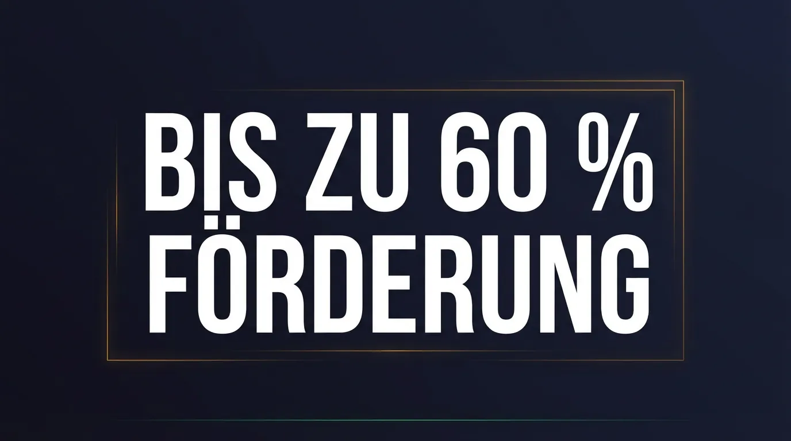
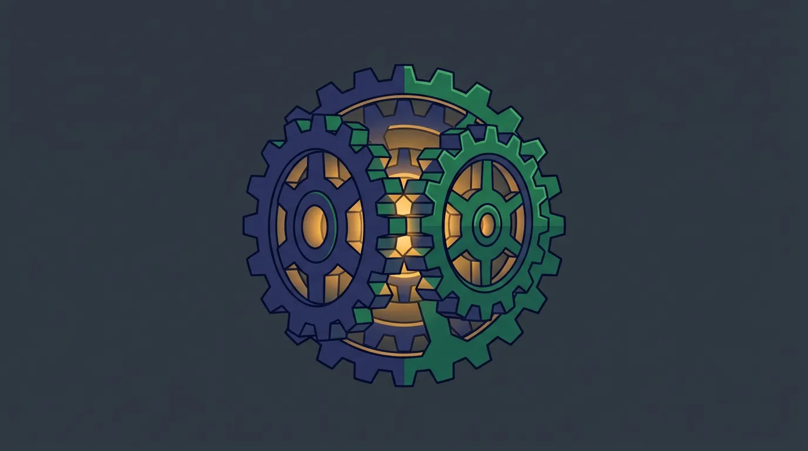
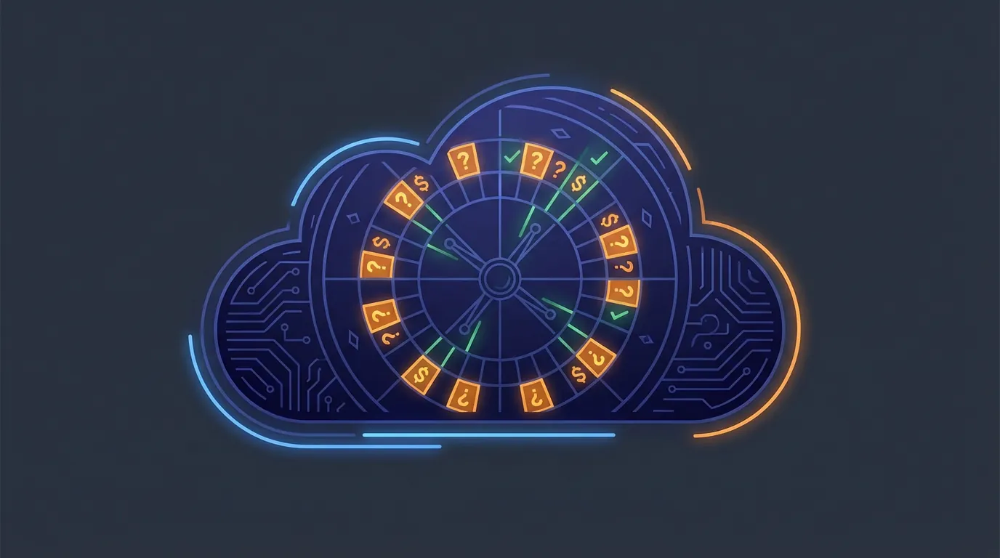
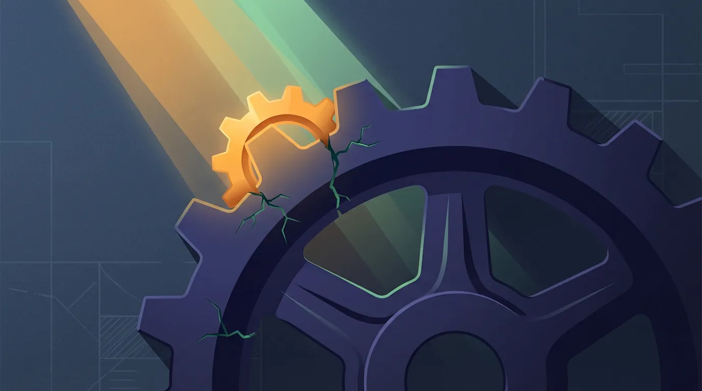

Impulse
Zum Weiterdenken
Beiträge zu KI in Organisationen, Bildung und Arbeit. Manche sind älter – die Entwicklung ist schnell. Wo sich Zahlen geändert haben, steht ein Hinweis.

Claude Code, OpenClaw und die neue Agent-Architektur: Was dahinter steckt
Claude Code ist kein Chatbot. OpenClaw ist kein Chatbot. Und was wir daraus bauen, ist erst recht keiner. Ein technischer Blick auf die Agent-Landschaft 2026.

KMU.DIGITAL: So bekommen Sie bis zu 60 % Förderung für Ihr KI-System
KI-Systeme für den Betrieb sind leistbarer als die meisten denken. Über KMU.DIGITAL und Landesförderungen können österreichische KMU bis zu 60 % der Kosten abdecken. Hier erfahren Sie, welche Schritte nötig sind, was gefördert wird — und was am Ende wirklich übrig bleibt.

ChatGPT + Hausregeln = Custom Agent? Warum der Unterschied zählt
Viele KMU glauben, eine ChatGPT-Lizenz mit einer internen Richtlinie sei genug. Dieser Beitrag zeigt die fünf entscheidenden Unterschiede zwischen einem generischen Chat-Tool und einem System, das für Ihren Betrieb gebaut wurde.

Wie Ihr KI-System dazulernt — und warum es nach 3 Monaten besser ist als am ersten Tag
ChatGPT vergisst nach jedem Gespräch alles. Ein richtig eingerichtetes KI-System merkt sich, was in Ihrem Betrieb funktioniert — und wird Woche für Woche besser. Ohne Science-Fiction, dafür mit konkreten Beispielen aus dem Arbeitsalltag.

Das Ampel-System: KI-Risiken kontrollieren, ohne KI zu bremsen
KI im Betrieb braucht klare Spielregeln — aber keine, die in einer Schublade verstauben. Das Ampel-System gibt Ihrem Team einfache, im System verankerte Leitlinien für den sicheren Umgang mit Daten.

KI im Betrieb: Warum Schulung allein nicht reicht
Ein KI-Workshop schafft Bewusstsein und erfüllt die gesetzliche Pflicht. Aber Wissen allein verändert keinen Arbeitsalltag. Was Betriebe mit 5 bis 50 Mitarbeitern wirklich brauchen — und wie die Förderung es leistbar macht.

Das Tool läuft. Warum fast niemand es nutzt.
Schulungen erzeugen Wissens-Spikes, keine Gewohnheiten. Warum KI-Adoption ohne Champions und Governance-Rahmen scheitert – und was die neue lokale Agent-Architektur von Cowork, OpenClaw und NemoClaw für Unternehmen bedeutet.

Warum KI-Transformation in Unternehmen bisher scheiterte und welche Architektur das jetzt wirklich ändert
Nur 24% nutzen KI erfolgreich. Entdecken Sie, wie eine revolutionäre Agenten-Architektur mit NemoClaw und dem Schleusen-Prinzip Ihre Digitalisierung nachhaltig voranbringt. Schluss mit gescheiterten Piloten. hier erfahren Sie, wie es wirklich funktioniert.

"Open Source" ist ein Trugschluss: Was der Llama-4-Ausschluss für österreichische KMUs bedeutet
Meta hat alle EU-Unternehmen von Llama 4 ausgeschlossen. Der Begriff 'Open Source' wird bei KI-Modellen systematisch missbraucht. Was österreichische KMUs jetzt wissen müssen – und welche europäischen Alternativen es gibt.

KI-Hardware 2025: Warum zwei gebrauchte RTX 3090 die neue RTX 5090 schlagen
Die RTX 5090 (32 GB VRAM, €2.900+) ist für 70B-Modelle zu klein – sie brauchen 42 GB. Zwei gebrauchte RTX 3090 bieten 48 GB für €1.400. Der Flaschenhals ist VRAM, nicht TFLOPS. Break-Even gegenüber Cloud: 4-6 Monate.

Der hybride Ansatz: Warum weder Cloud noch Isolation für österreichische KMUs funktioniert
Am 2. August 2026 endet die Übergangsfrist des EU AI Act. Reine Cloud-KI kostet über 3 Jahre €108.000 – ein hybrides System €27.000. Die Frage ist nicht Cloud oder lokal, sondern: Wer kontrolliert die Routing-Entscheidung?

KI im Gemeindeamt: Digital stark, nah beim Menschen
42 Gemeinden im Weinviertel, Kremsmünster mit "Kremsi", St. Pölten mit "Lou" – österreichische Gemeinden setzen auf KI-Chatbots. Aber: Bürgerdaten sind sensibel. Welche Lösungen funktionieren, was kosten sie, und wie bleibt die Datensouveränität gewahrt?

KI für Kammern und Interessenvertretungen: Konkrete Anwendungen statt Buzzwords
593.639 Mitglieder, steigende Anfragen, knappes Personal: Wie Kammern und Verbände KI für 24/7-Service nutzen können. Die WK Wien macht es vor – mit Chatbot I.S.A. und Voicebot. Konkrete Anwendungen, Kosten und rechtliche Anforderungen seit Februar 2025.

Wie Sie Ihr Lebenswerk digital konservieren – bevor es zu spät ist
52.500 österreichische Unternehmen stehen bis 2034 vor der Nachfolge – 705.000 Arbeitsplätze betroffen. 49% haben noch keine Nachfolge. Und 80% des Wissens ist nicht dokumentiert. Wie KI hilft, Erfahrungswissen zu bewahren.

Die Cloud ist keine Bank, sie ist ein Casino
Power BI +40%, Microsoft 365 bis +17%, Family +30% – die Preiserhöhungen 2025/2026 zeigen das Muster: Vendor Lock-in ermöglicht Schmerzgrenzen-Tests. Was Sie jetzt tun können.

KI in der Erwachsenenbildung: Warum Trainer wertvoller werden, nicht überflüssig
85% der Unternehmer halten Weiterbildung für wichtig, 68% der Mitarbeiter erwarten KI-Einsatz. Die Frage ist nicht ob KI Trainer ersetzt – sondern welche Trainer ersetzt werden. Der Shift vom Wissensvermittler zum Lernbegleiter.

Vibe Coding: Warum KMUs jetzt Software bauen können, ohne Entwickler einzustellen
Vibe Coding – Collins Wort des Jahres 2025: Software durch Beschreiben statt Programmieren. 25% der Y-Combinator-Startups arbeiten so, Google generiert 30% des Codes mit KI. Was KMUs damit anfangen können – und wo die Grenzen liegen.

Die Feierabend-Pipeline: Wie Sie Ihre besten Ideen nie wieder vergessen
Die besten Ideen kommen unterwegs – und gehen verloren, bis Sie zuhause sind. Mit OpenAI Whisper (92% Genauigkeit, 98 Sprachen) und einer einfachen Pipeline werden Sprachnotizen zu strukturiertem Wissen. So funktioniert es.

Warum die meisten KI-Projekte scheitern – und was die erfolgreichen anders machen
MIT-Studie 2025: 95% der KI-Piloten erreichen keinen messbaren ROI. Capgemini: 88% erreichen nicht Produktion. Die genaue Zahl variiert – aber das Muster ist klar. Kaufen statt bauen (67% vs. 22% Erfolgsquote), Mitarbeiter einbinden, konkrete Ziele.

Das Schleusen-Prinzip: Wie Sie entscheiden, welche Daten in die Cloud dürfen
57% der Unternehmen nutzen Hybrid Cloud – aber ohne klare Logik. Das Schleusen-Prinzip: Drei Zonen für Ihre Daten (Kernwissen, Arbeitsdaten, Commodity) und die Frage, die wirklich zählt: Wer kontrolliert den Wasserhahn?

Der 100-Euro-Mitarbeiter: Was KI für österreichische KMU wirklich leistet
Ein Mitarbeiter kostet 276 € pro Arbeitstag – ein KI-Assistent oft nur 100 € im Monat. Dieser Artikel enthüllt die wahre Kostenrechnung und wie österreichische KMU mit KI messbar ihren ROI steigern können. Entdecken Sie die ungenutzten Potenziale!

Wem gehören die Daten, die Ihre Mitarbeiter gerade in ChatGPT tippen?
Im Mai 2025 wurde OpenAI gerichtlich zur Datenspeicherung verpflichtet. 70% der Mitarbeiter nutzen heimlich KI. Erfahren Sie, welche Risiken dies für Ihre Firmendaten birgt und wie Sie Ihr KMU schützen können.

Der Personal-Crunch wird nicht vorbeigehen
2050: 600.000 mehr über 65, aber 300.000 weniger Erwerbstätige. 67% der Mittelständler sehen Fachkräftemangel als größtes Risiko. Ein Drittel verliert bereits Umsätze. Burgenland und Kärnten am stärksten betroffen. Was KMU jetzt tun können.

KI-gestützte Softwareentwicklung für KMUs: Was ist 2025 wirklich möglich?
Stack Overflow 2025: 84% der Entwickler nutzen KI – aber nur 29% vertrauen der Ausgabe. 66% kämpfen mit "fast richtig, aber nicht ganz". 72% lehnen Vibe Coding für professionelle Arbeit ab. Was das für KMU-Projekte bedeutet.
Neue Beiträge auch als RSS-Feed.